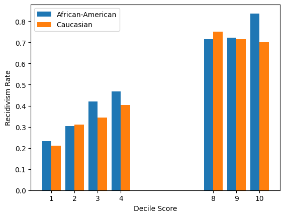

Measuring Fairness#
The first step to addressing algorithmic bias is to be able to measure the degree of fairness (or lack thereof) in a given dataset. This chapter covers a number of commonly used fairness measures. For concreteness, we will demonstrate these fairness measures by calculating them on the Compas Recidivism Dataset.
Data: Compas Recidivism Dataset
Location: “data/compas-scores-two-years.csv”
Shape: (7214, 53)
Note: data taken from ProPublica’s analyses of COMPAS
The following script imports the dataset and prints the first few rows.
# import compas two-year dataset
import pandas as pd
compas = pd.read_csv('../data/compas-scores-two-years.csv')
compas.head()
| id | name | first | last | compas_screening_date | sex | dob | age | age_cat | race | ... | v_decile_score | v_score_text | v_screening_date | in_custody | out_custody | priors_count.1 | start | end | event | two_year_recid | |
|---|---|---|---|---|---|---|---|---|---|---|---|---|---|---|---|---|---|---|---|---|---|
| 0 | 1 | miguel hernandez | miguel | hernandez | 2013-08-14 | Male | 1947-04-18 | 69 | Greater than 45 | Other | ... | 1 | Low | 2013-08-14 | 2014-07-07 | 2014-07-14 | 0 | 0 | 327 | 0 | 0 |
| 1 | 3 | kevon dixon | kevon | dixon | 2013-01-27 | Male | 1982-01-22 | 34 | 25 - 45 | African-American | ... | 1 | Low | 2013-01-27 | 2013-01-26 | 2013-02-05 | 0 | 9 | 159 | 1 | 1 |
| 2 | 4 | ed philo | ed | philo | 2013-04-14 | Male | 1991-05-14 | 24 | Less than 25 | African-American | ... | 3 | Low | 2013-04-14 | 2013-06-16 | 2013-06-16 | 4 | 0 | 63 | 0 | 1 |
| 3 | 5 | marcu brown | marcu | brown | 2013-01-13 | Male | 1993-01-21 | 23 | Less than 25 | African-American | ... | 6 | Medium | 2013-01-13 | NaN | NaN | 1 | 0 | 1174 | 0 | 0 |
| 4 | 6 | bouthy pierrelouis | bouthy | pierrelouis | 2013-03-26 | Male | 1973-01-22 | 43 | 25 - 45 | Other | ... | 1 | Low | 2013-03-26 | NaN | NaN | 2 | 0 | 1102 | 0 | 0 |
5 rows × 53 columns
# following the ProPublica analysis, we remove several rows with missing data
# see https://github.com/propublica/compas-analysis/blob/master/Compas%20Analysis.ipynb for more details
compas = compas[['age', 'c_charge_degree', 'race', 'age_cat', 'score_text', 'sex', 'priors_count', 'days_b_screening_arrest', 'decile_score', 'is_recid', 'two_year_recid', 'c_jail_in', 'c_jail_out']]
compas = compas[(compas['days_b_screening_arrest'] <= 30) &
(compas['days_b_screening_arrest'] >= -30) &
(compas['is_recid'] != -1) &
(compas['c_charge_degree'] != 'O') &
(compas['score_text'] != 'N/A')]
compas.shape
(6172, 13)
# finally, we focus on "race" as the protected attribute and African American vs. Caucasian as the two groups
compas = compas[compas['race'].isin(['African-American', 'Caucasian'])]
compas.shape
(5278, 13)
Fairness Measures for Binary Classifier#
To begin with, we consider measuring fairness of a classification model. In the Compas dataset, the score_text columns contains model-predicted risk level (low, medium, high) and the two_year_recid column contains the actual two-year recidivism label (1, 0). Because the ground-truth outcome label is binary, we focus on the “low” and “high” predicted classes here.[1]
compas_binary = compas.copy()
# remove "medium" in score_text
compas_binary = compas_binary[compas_binary['score_text'] != 'Medium']
Throughout this chapter, we adopt the following notations in formal definitions of different fairness measures:
Notations
\(Y\): actual outcome (0/1, recidivism without two years or not);
\(\widehat{Y}\): predicted risk score (“High” or “Low”);
\(p\): predicted probability of being “High” risk;
\(R\): race, protected attribute of interested in this example. \(R \in \{AA, W\}\) represents African American and Caucasian respectively;
\(\boldsymbol{X}\): other observable characteristics (e.g., gender, age, prior offenses).
Demographic Parity#
Demographic parity (sometimes also referred to as Statistical Parity) is one of the most straightforward fairness measures. It simply asserts that one group should not receive systematically more favorable predicted outcomes than the other group. Despite its simplicity, it has been extensively used / discussed in the prior literature, such as Calders et al. [CKP09], Calders and Verwer [CV10], Kamiran and Calders [KC09], Kamishima et al. [KAS11], among many others.
In the context of recidivism prediction, with the protected attribute being race and the two groups to be compared being African American vs. White, demographic parity can be defined as:
Definition: Demographic Parity for Binary Classifier
# evaluate demographic parity
# percentage of "high" scores among African Americans
AA_pct = len(compas_binary[(compas_binary['score_text'] == 'High') & (compas_binary['race'] == 'African-American')]) / len(compas_binary[compas_binary['race'] == 'African-American'])
# percentage of "high" scores among Whites
W_pct = len(compas_binary[(compas_binary['score_text'] == 'High') & (compas_binary['race'] == 'Caucasian')]) / len(compas_binary[compas_binary['race'] == 'Caucasian'])
print("Percentage of 'high' predicted scores among African Americans: ", AA_pct)
print("Percentage of 'high' predicted scores among Whites: ", W_pct)
Percentage of 'high' predicted scores among African Americans: 0.38566864445458693
Percentage of 'high' predicted scores among Whites: 0.13680981595092023
As we can see, around 38.6% of African American defendents received high-risk predictions whereas only 13.7% of White defendents received high-risk predictions. This is a violation of demographic parity.
Conditional Demographic Parity#
Demographic parity is a rather crude measure and, specifically, does not take into account any systematic differences across the two groups that may explain some of the disparity in predicted outcomes. Conditional Demographic Parity seeks to amend this issue by conditioning on other observable characteristics. It has also been discussed in prior literature, including for example, Kamiran et al. [KvZliobaiteC13], Žliobaite et al. [vZliobaiteKC11].
Definition: Conditional Demographic Parity for Binary Classifier
# evaluate conditional demographic parity
# following ProPublica's analysis, X may contain: age, gender, number of prior offenses, and severity of charge
# they can be used as control variables in a logistic regression of predicted risk score on race
import statsmodels.formula.api as smf
# convert score_text to 1 and 0
compas_binary['Y'] = compas_binary['score_text'].apply(lambda x: 1 if x == 'High' else 0)
model = smf.logit(formula = "Y ~ race + age + sex + priors_count + c_charge_degree", data = compas_binary).fit()
model.summary()
Optimization terminated successfully.
Current function value: 0.360191
Iterations 8
| Dep. Variable: | Y | No. Observations: | 3821 |
|---|---|---|---|
| Model: | Logit | Df Residuals: | 3815 |
| Method: | MLE | Df Model: | 5 |
| Date: | Wed, 02 Oct 2024 | Pseudo R-squ.: | 0.3921 |
| Time: | 13:09:26 | Log-Likelihood: | -1376.3 |
| converged: | True | LL-Null: | -2263.9 |
| Covariance Type: | nonrobust | LLR p-value: | 0.000 |
| coef | std err | z | P>|z| | [0.025 | 0.975] | |
|---|---|---|---|---|---|---|
| Intercept | 2.5816 | 0.224 | 11.531 | 0.000 | 2.143 | 3.020 |
| race[T.Caucasian] | -0.6532 | 0.105 | -6.229 | 0.000 | -0.859 | -0.448 |
| sex[T.Male] | -0.0371 | 0.128 | -0.290 | 0.772 | -0.288 | 0.214 |
| c_charge_degree[T.M] | -0.4953 | 0.106 | -4.682 | 0.000 | -0.703 | -0.288 |
| age | -0.1396 | 0.007 | -19.506 | 0.000 | -0.154 | -0.126 |
| priors_count | 0.3782 | 0.016 | 23.279 | 0.000 | 0.346 | 0.410 |
We can see that even after controlling for age, gender, prior offenses and the severity of charge, being African American still significantly increased the odds of receiving high-risk predictions. This is a violation of conditional demographic parity.
Error Balance / Equalized Odds#
Demographic parity (with or without conditioning on other observable characteristics) aims to balance the predicted outcomes of two groups. Fairness measures like these reflect the Equal Outcome ideal. In contrast, many other fairness measures are designed to reflect the Equal Opportunity ideal (that different groups are treated equally, even though their outcomes may differ). Error Balance or Equalized Odds is one of such measures.
Roughly speaking, error balance asserts that a classifier should not be systematically more inaccurate for one group vs. the other group. Specifically, one way to quantify it is to check whether the false positive rate and false negative rate are the same for the two groups. More formally,
Definition: Error Balance / Equalized Odds
# evaluate FPR and FNR for both groups
FPR_AA = len(compas_binary[(compas_binary['score_text'] == 'High') & (compas_binary['race'] == 'African-American') & (compas_binary['two_year_recid'] == 0)]) / len(compas_binary[(compas_binary['race'] == 'African-American') & (compas_binary['two_year_recid'] == 0)])
FNR_AA = len(compas_binary[(compas_binary['score_text'] == 'Low') & (compas_binary['race'] == 'African-American') & (compas_binary['two_year_recid'] == 1)]) / len(compas_binary[(compas_binary['race'] == 'African-American') & (compas_binary['two_year_recid'] == 1)])
FPR_W = len(compas_binary[(compas_binary['score_text'] == 'High') & (compas_binary['race'] == 'Caucasian') & (compas_binary['two_year_recid'] == 0)]) / len(compas_binary[(compas_binary['race'] == 'Caucasian') & (compas_binary['two_year_recid'] == 0)])
FNR_W = len(compas_binary[(compas_binary['score_text'] == 'Low') & (compas_binary['race'] == 'Caucasian') & (compas_binary['two_year_recid'] == 1)]) / len(compas_binary[(compas_binary['race'] == 'Caucasian') & (compas_binary['two_year_recid'] == 1)])
# print results
print("False Positive Rate for African Americans: ", FPR_AA)
print("False Positive Rate for Whites: ", FPR_W)
print("False Negative Rate for African Americans: ", FNR_AA)
print("False Negative Rate for Whites: ", FNR_W)
False Positive Rate for African Americans: 0.19464944649446494
False Positive Rate for Whites: 0.057547169811320756
False Negative Rate for African Americans: 0.42728093947606144
False Negative Rate for Whites: 0.7157894736842105
Here, we see that the predicted risk is systematically more inaccurate for African Americans in the undesirable direction. Specifically, the model makes more false positive mistakes (i.e., misclassify a low-risk defendent as high-risk) for African Americans but makes more false negative mistakes (i.e., misclassify a high-risk defendent as low-risk) for Whites. In fact, this is one of ProPublica’s main arguments to show the unfairness of COMPAS [ALMK16].
Just like in the case of demographic parity, you can further condition on other observables to construct a conditional version of error balance / equalized odds. Technically speaking, this amounts to running a logistic regression with (i) observed characteristics and (ii) the actual recidivism labels as control variables.
# evaluate conditional error balance / equalized odds
import statsmodels.formula.api as smf
# convert score_text to 1 and 0
compas_binary['Y'] = compas_binary['score_text'].apply(lambda x: 1 if x == 'High' else 0)
model = smf.logit(formula = "Y ~ race + age + sex + priors_count + c_charge_degree + two_year_recid", data = compas_binary).fit()
model.summary()
Optimization terminated successfully.
Current function value: 0.349152
Iterations 8
| Dep. Variable: | Y | No. Observations: | 3821 |
|---|---|---|---|
| Model: | Logit | Df Residuals: | 3814 |
| Method: | MLE | Df Model: | 6 |
| Date: | Wed, 02 Oct 2024 | Pseudo R-squ.: | 0.4107 |
| Time: | 13:09:26 | Log-Likelihood: | -1334.1 |
| converged: | True | LL-Null: | -2263.9 |
| Covariance Type: | nonrobust | LLR p-value: | 0.000 |
| coef | std err | z | P>|z| | [0.025 | 0.975] | |
|---|---|---|---|---|---|---|
| Intercept | 1.9045 | 0.235 | 8.098 | 0.000 | 1.444 | 2.365 |
| race[T.Caucasian] | -0.6446 | 0.107 | -6.041 | 0.000 | -0.854 | -0.435 |
| sex[T.Male] | -0.1273 | 0.131 | -0.970 | 0.332 | -0.385 | 0.130 |
| c_charge_degree[T.M] | -0.4905 | 0.108 | -4.551 | 0.000 | -0.702 | -0.279 |
| age | -0.1276 | 0.007 | -17.875 | 0.000 | -0.142 | -0.114 |
| priors_count | 0.3421 | 0.016 | 21.011 | 0.000 | 0.310 | 0.374 |
| two_year_recid | 0.9197 | 0.101 | 9.136 | 0.000 | 0.722 | 1.117 |
Another way to define error balance makes use of predicted probabilities rather than class predictions. It seeks to equalize the expected predicted probabilities of different groups conditioning on true labels (see, for example, Kleinberg et al. [KMR16]). More formally,
Definition: Error Balance / Equalized Odds (with predicted probabilities)
# evaluate error balance with predicted probabilities
# we will use "decile_score" to approximate the predicted probability of recidivism
# COMPAS predicts "High" risk when decile score is greater than 7 and "Low" if the decile score is lower than 5
# print average decile_score for African Americans and Whites
AA_0_avg = compas_binary[(compas_binary['race'] == 'African-American') & (compas_binary['two_year_recid'] == 0)]['decile_score'].mean()
AA_1_avg = compas_binary[(compas_binary['race'] == 'African-American') & (compas_binary['two_year_recid'] == 1)]['decile_score'].mean()
W_0_avg = compas_binary[(compas_binary['race'] == 'Caucasian') & (compas_binary['two_year_recid'] == 0)]['decile_score'].mean()
W_1_avg = compas_binary[(compas_binary['race'] == 'Caucasian') & (compas_binary['two_year_recid'] == 1)]['decile_score'].mean()
# print results
print("Average decile score for African Americans who did not recidivate: ", AA_0_avg)
print("Average decile score for African Americans who recidivated: ", AA_1_avg)
print("Average decile score for Whites who did not recidivate: ", W_0_avg)
print("Average decile score for Whites who recidivated: ", W_1_avg)
Average decile score for African Americans who did not recidivate: 3.5488929889298895
Average decile score for African Americans who recidivated: 6.308039747064138
Average decile score for Whites who did not recidivate: 2.3650943396226416
Average decile score for Whites who recidivated: 4.187719298245614
Again, we see that the model systematically assigned higher decile scores to African Americans who did not recidivate, but lower scores to Whites who did recidivate.
Predictive Parity#
It is worth noting that a potential criticism for the error balance measure, which is also one of the counter-arguments from COMPAS to ProPublica, is that it “ignores” the base rate differences between the two groups (that is, the two groups had different recidivism rates to begin with) [DMB16]. They argue for calculating the probability of recidivating or not given specific predictions (i.e., swapping the \(Y\) and \(\widehat{Y}\) in error balance definition). Formally, this is called Predictive Parity
Definition: Predictive Parity (Equalized False Discovery / Omission Rates)
# evaluate predictive parity for both groups
FOR_AA = len(compas_binary[(compas_binary['two_year_recid'] == 1) & (compas_binary['race'] == 'African-American') & (compas_binary['score_text'] == 'Low')]) / len(compas_binary[(compas_binary['race'] == 'African-American') & (compas_binary['score_text'] == 'Low')])
FDR_AA = len(compas_binary[(compas_binary['two_year_recid'] == 0) & (compas_binary['race'] == 'African-American') & (compas_binary['score_text'] == 'High')]) / len(compas_binary[(compas_binary['race'] == 'African-American') & (compas_binary['score_text'] == 'High')])
FOR_W = len(compas_binary[(compas_binary['two_year_recid'] == 1) & (compas_binary['race'] == 'Caucasian') & (compas_binary['score_text'] == 'Low')]) / len(compas_binary[(compas_binary['race'] == 'Caucasian') & (compas_binary['score_text'] == 'Low')])
FDR_W = len(compas_binary[(compas_binary['two_year_recid'] == 0) & (compas_binary['race'] == 'Caucasian') & (compas_binary['score_text'] == 'High')]) / len(compas_binary[(compas_binary['race'] == 'Caucasian') & (compas_binary['score_text'] == 'High')])
# print results
print("False Omission Rate for African Americans: ", FOR_AA)
print("False Omission Rate for Whites: ", FOR_W)
print("False Discovery Rate for African Americans: ", FDR_AA)
print("False Discovery Rate for Whites: ", FDR_W)
False Omission Rate for African Americans: 0.3514115898959881
False Omission Rate for Whites: 0.2899786780383795
False Discovery Rate for African Americans: 0.24970414201183433
False Discovery Rate for Whites: 0.273542600896861
Here, we find that the false omission rate (i.e., labeled as low-risk, but did recidivate) is somewhat higher for African American than for White, and the false discovery rate is fairly similar. For those interested, you can see Flores et al. [FBL16] for additional objections to ProPublica’s analyses and conclusions.
Calibration within Groups#
Calibration within groups represents another fairness measure that relies on predicted probabilities. It refers to a property of classification models, known as calibration, which requires the predicted probabilities to be “accurate” in the sense that they reflect the actual event rate. For example, suppose a well-calibrated model assigns a predicted probability of 70% (of being in positive class) to 10 data points, then you would expect 7 out of those data points to actually belong to the positive class. Calibration is a desierable property because it allows users to intuitively interpret the predicted probabilities as actual event rates. Conversely, predicted probabilities from a poorly calibrated model may systematically overestimate or underestimate the actual event rates.
Adapting the notion of calibration for fairness measurement, we say that a classifier achieves calibration within groups if predictions from the two groups are both well-calibrated. More formally,
Definition: Equal Calibration
# evaluate calibration
# we will again use decile_score as the predicted probability of recidivism
# we will visualize the percentage of recidivism for each decile score and racial group
import matplotlib.pyplot as plt
# group by decile score and race, then calculate the average value of two_year_recid
calibration = compas_binary.groupby(['decile_score', 'race'])['two_year_recid'].mean().reset_index()
X = calibration['decile_score'].unique()
Y_AA = calibration[calibration['race'] == "African-American"]['two_year_recid']
Y_W = calibration[calibration['race'] == "Caucasian"]['two_year_recid']
# plot average recidivism rate for each decile score and the two groups
width = 0.4
plt.bar(X, Y_AA, width, label = "African-American")
plt.bar(X + width, Y_W, width, label = "Caucasian")
plt.xlabel("Decile Score")
plt.ylabel("Recidivism Rate")
plt.xticks(X + width / 2, X)
plt.legend()
plt.show()

Interestingly, we see that the average recidivism rates across different deciles are somewhat similar between the two groups. Among low-risk deciles, the model seems to underestimate the actual recidivism risks for both groups. Among high-risk deciles, it seems to overestimate the risks. Overall, we do not see a very clear pattern and in fact, this is one of COMPAS’ counter-arguments to ProPublica, i.e., their risk tool is similarly calibrated for both racial groups [DMB16].
Fairness Measure for Numeric Prediction / Regression#
Besides fairness measures for binary classification, we also need to consider fairness measures for numeric prediction / regression tasks, where the target variables take continuous values. A few fairness measures designed for binary classification can be generalized to the case of numeric prediction / regression. For demonstration, we will treat the decile_score as the numerical prediction values.
compas_regression = compas.copy()
# treating decile_score as the numerical prediction values, no need to remove any rows
(Conditional) Demographic Parity#
The same notions of demographic parity and conditional demographic parity can be defined by comparing the expected values of the predicted outcome between two groups.
Definition: Demographic Parity for Regression
Definition: Conditional Demographic Parity for Regression
Detecting demographic parity can be done by essentially running a regression of \(\widehat{Y}\) on \(R\) (and potentially controlling for other observables to evaluate the conditional demographic parity). If \(R\) is statistically significantly associated with \(\widehat{Y}\), then there will be a significant difference in the expected \(\widehat{Y}\) between the two groups.
# evaluate conditional demographic parity
# running a linear regression of decile_score on race, controlling for age, gender, number of prior offenses, and severity of charge
import statsmodels.formula.api as smf
model = smf.ols(formula = "decile_score ~ race + age + sex + priors_count + c_charge_degree", data = compas_regression).fit()
model.summary()
| Dep. Variable: | decile_score | R-squared: | 0.421 |
|---|---|---|---|
| Model: | OLS | Adj. R-squared: | 0.420 |
| Method: | Least Squares | F-statistic: | 766.5 |
| Date: | Wed, 02 Oct 2024 | Prob (F-statistic): | 0.00 |
| Time: | 13:09:28 | Log-Likelihood: | -11558. |
| No. Observations: | 5278 | AIC: | 2.313e+04 |
| Df Residuals: | 5272 | BIC: | 2.317e+04 |
| Df Model: | 5 | ||
| Covariance Type: | nonrobust |
| coef | std err | t | P>|t| | [0.025 | 0.975] | |
|---|---|---|---|---|---|---|
| Intercept | 7.7276 | 0.113 | 68.612 | 0.000 | 7.507 | 7.948 |
| race[T.Caucasian] | -0.5339 | 0.064 | -8.334 | 0.000 | -0.660 | -0.408 |
| sex[T.Male] | -0.0735 | 0.076 | -0.968 | 0.333 | -0.222 | 0.075 |
| c_charge_degree[T.M] | -0.4557 | 0.064 | -7.154 | 0.000 | -0.581 | -0.331 |
| age | -0.1052 | 0.003 | -39.595 | 0.000 | -0.110 | -0.100 |
| priors_count | 0.2742 | 0.006 | 42.639 | 0.000 | 0.262 | 0.287 |
| Omnibus: | 185.369 | Durbin-Watson: | 1.959 |
|---|---|---|---|
| Prob(Omnibus): | 0.000 | Jarque-Bera (JB): | 187.510 |
| Skew: | 0.431 | Prob(JB): | 1.92e-41 |
| Kurtosis: | 2.667 | Cond. No. | 151. |
Notes:
[1] Standard Errors assume that the covariance matrix of the errors is correctly specified.
We can see that, even after controlling for several observables, being the Caucasian is still negatively and significantly associated with risk decile.
Residual Balance#
Residual balance is analogous to the Error Balance measure in binary classification, where fairness is measured by the degree to which the model’s prediction errors (which is residual in the case of regression) are balanced across the two groups. Note that we do not have the ground truth value for decile_score in the dataset. For illustration purpose only, we will use the binary label is_redic as the ground truth, and use decile_score / 10 as the predicted value.
Definition: Residual Balance for Regression[2]
# get the residuals of the regression and store as a new column
compas_regression['residuals'] = compas_regression['decile_score'] / 10 - compas_regression['two_year_recid']
# evaluate sqaured residuals for African Americans and Caucasians
AA_residuals = compas_regression[compas_regression['race'] == 'African-American']['residuals'] ** 2
W_residuals = compas_regression[compas_regression['race'] == 'Caucasian']['residuals'] ** 2
# print results
print("Average squared residuals for African Americans: ", AA_residuals.mean())
print("Average squared residuals for Whites: ", W_residuals.mean())
Average squared residuals for African Americans: 0.22908346456692916
Average squared residuals for Whites: 0.2200523062291964
We see that African American defendents had slighter greater residuals (indicating less accurate predictions) than White defendents.